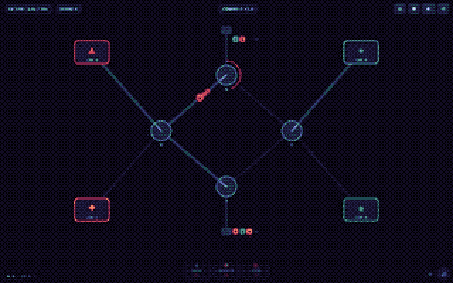
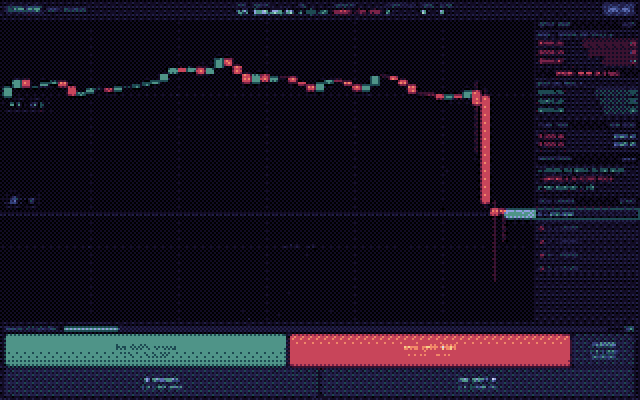
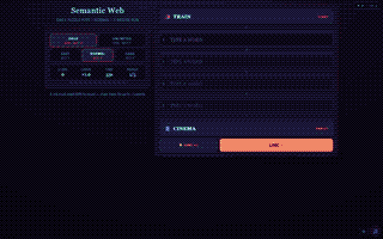
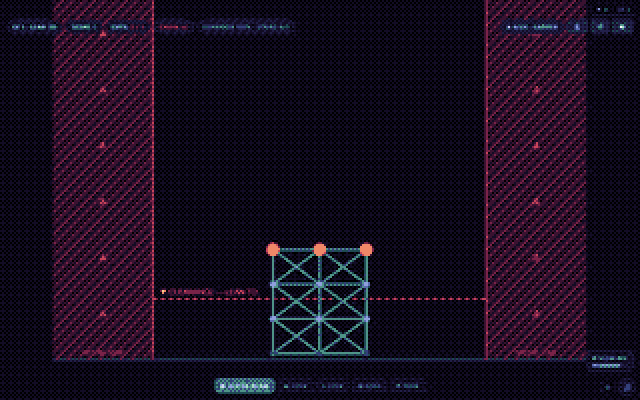

Free, with ads
The original, for web portals such as CrazyGames, Poki and GameDistribution once ads are switched on.
Marketplace
The games I make, kept apart from the portfolio. Nothing is on sale yet. Each one says how it's meant to be sold and how far along it is.
Three games
How the arcade is sold
Every arcade game is one source file, built three ways.
The original, for web portals such as CrazyGames, Poki and GameDistribution once ads are switched on.
The same game with every ad and portal call removed at build time. For CrazyGames' Basic Launch, and for selling or licensing to other companies.
A Google Play wrapper: a paid listing of the ad-free edition, or the free edition with ads.
Where it stands: covers, preview videos and device tests aren't done yet, store fees haven't been checked, and nothing has been uploaded.
The arcade
One file each, no outside requests. More on the arcade page.





